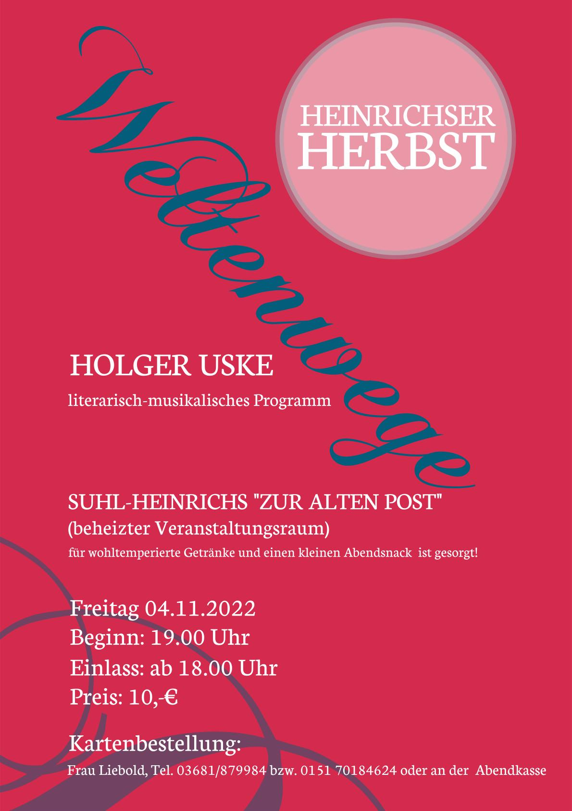

Suhl. Zu einem literarisch-musikalischen Abend mit dem Suhler Dichter Holger Uske lädt das Team der „Alten Post" in Heinrichs für Freitag, den 4. November 2022, 19 Uhr ein. Unter dem Titel „Weltenwege" stellt Uske neue Texte – Gedichte und Erzählungen – und Lieder vor.
Der beheizte Veranstaltungsraum der vormaligen Gaststätte „Alte Post" in der Meininger Straße 69 im Suhler Ortsteil Heinrichs wird damit erneut zum Kulturdomizil. Der Suhler Fotograf Jens Gutberlet und Katrin Liebold setzen sich mit viel Engagement dafür ein, dass dieser einzigartige Kulturort der Stadt belebt bleibt. Sie fanden für ihr Anliegen den Titel „Heinrichser Herbst" und freuen sich auf viele interessierte Gäste. Für Uskes neues Programm „Weltenwege" ist es die Premiere. Der Autor vereint darin poetische Ausflüge in die äußere wie in die innere Welt und sinnt den vielfältigen möglichen Wegen dahin nach.
Einlass ist ab 18 Uhr, ein kleiner Abendsnack und wohltemperierte Getränke stehen bereit. Kartenvorbestellungen sind wegen der begrenzten Plätze erforderlich. Der Eintritt für das etwa 1½-stündige literarisch-musikalische Programm beträgt 10 €.
